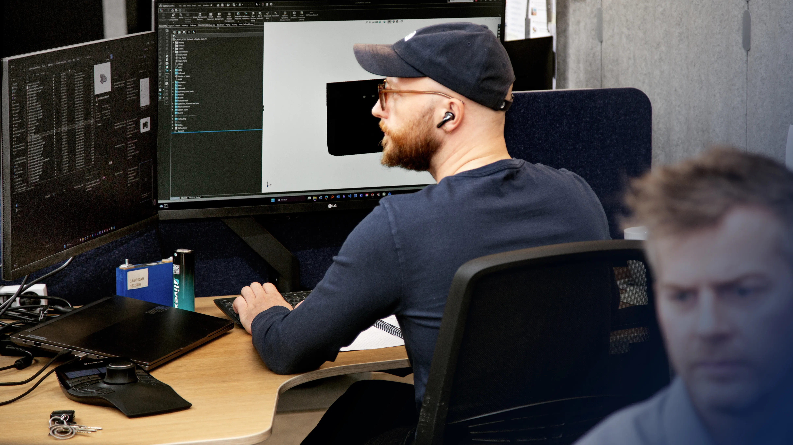
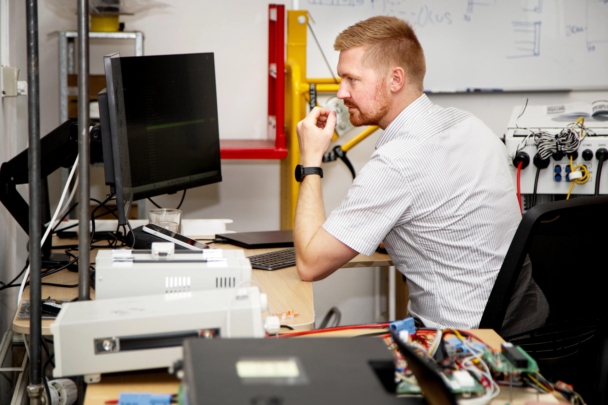

News
Why projects start with the duty cycle, not the schematic
The first useful drawing of a battery system isn't electrical — it's how the machine actually intends to use power.
Read the articleArticles, updates and conversations with the people behind the work — how battery systems actually get built, tested and taken into series production.
The first useful drawing of a battery system isn't electrical — it's how the machine actually intends to use power.
Read the article
Every finished pack runs a full charge and discharge cycle before it leaves the floor.
Read the interview
A validated prototype and a repeatable production process are two different engineering problems.

Electronics and communication protocols built and tested around the specific application.
Read the interview
A CAD model only proves itself once it's been checked against a part you can actually hold.

Exploded assemblies reviewed together before a single part is ordered.
Read the interview
Every finished pack runs a full charge and discharge cycle — the one step that never gets skipped.

Wiring and connectors built the way the drawing specifies, not the way that's fastest.

Mechanics, electronics, software and production don't hand off a project in sequence — they hold it together.

A model only proves itself once it becomes a physical part you can hold.

From ground robots to maritime power, the application defines the pack long before the cell chemistry does.

Test logs get the same attention as the schematic that produced them.
Tell us about the application and the constraints it has to work within. We'll tell you what a dependable battery system for it actually looks like.